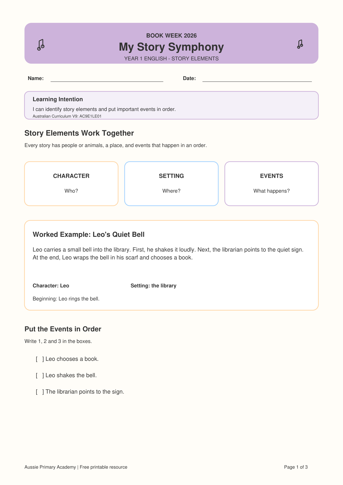

Year 1 · English · Literature · Book Week 2026 · Free Printable
Year 1 Story Elements Worksheet
Build Year 1 reading comprehension by identifying characters and settings, then sequencing important story events from beginning to middle to end.
Worksheet Preview

Preview of the first page · Full 3-page PDF includes student activities, answer key and teaching support
About This Year 1 Story Elements Worksheet
This Year 1 English resource helps students understand how story elements work together. Students identify the character and setting, then put important events in order.
The worksheet also builds beginning–middle–end retelling through short, accessible narratives and supported reading activities.
It is part of the My Story Symphony – Book Week 2026 collection from Aussie Primary Academy.
Learning Intention
“I can identify story elements and put important events in order.”
Australian Curriculum V9
AC9E1LE01
Supports students to discuss how language and images create characters, settings and events.
Aussie Primary Academy is an independent publisher and is not endorsed by ACARA.
Skills Practised
- Identifying characters
- Identifying settings
- Sequencing important events
- Beginning–middle–end retelling
- Reading for key details
- Oral and written response
Teacher / Parent Tip
Read the story once for enjoyment and then again for sequencing. Encourage students to use the words first, next and last before they draw or write.
What's Included
- Year 1 learning intention
- Character, setting and events explanation
- Worked example: Leo's Quiet Bell
- Event sequencing activity
- Short reading text: The Moonlight Music
- Beginning–middle–end response boxes
- Student “I Can” checklist
- Parent tip
- Answer key and teaching support
Differentiation
Support: Rehearse the story orally and use first–next–last prompts before students record their answers.
Core: Students identify the character and setting and sequence the key events independently.
Extend: Ask students to explain why one event had to happen before the next.
Why This Helps Readers
Sequencing helps young readers organise what they have understood and see how events connect. This supports both reading comprehension and early narrative writing.
How to Use This Worksheet
- Whole class: Model character, setting and sequencing together.
- Guided reading: Use the text for discussion before students complete the activity.
- Independent practice: Students complete the sequencing and beginning–middle–end tasks.
- Home learning: Parents can ask children to retell what happened first, next and last.
Frequently Asked Questions
Does this worksheet include an answer key?
Yes. Page 3 includes the correct sequence, suggested answers and teaching support.
Can students draw instead of write?
Yes. The beginning–middle–end task allows students to draw or write important events.
Is this only for Book Week?
No. The sequencing and story-element skills can be used throughout the year in Year 1 English.
Is it free?
Yes. The PDF is free to download and print for learning use.
Free Book Week Bonus
Continue with My Book Week Reading Adventure
Explore the free Foundation–Year 6 reading booklet with activities for story elements, characters, settings, vocabulary, creative response and book recommendations.
View the Free F–6 Workbook